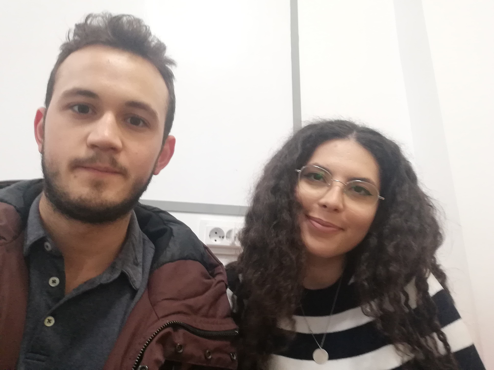

Andreea Ciuchilan
P.R
"Nu sunt de mult timp in Asociatie, dar pot spune asta cu siguranța: in asii ma simt ca acasa. Am avut plăcerea de a participa in Teambuilding și a fost una dintre cele mai frumoase experiențe. Nu organizarea, locația sau activitățile M au surprins, ci oamenii. Sunt foarte prietenoși, amuzanti, creativi și energici. Deși M am dus neștiind multe persoane, M am simțit extrem de bine in familia Asii. Abia aștept sa iau parte la mai multe activități alături de acești oameni. Doar părerea unui bobocel"